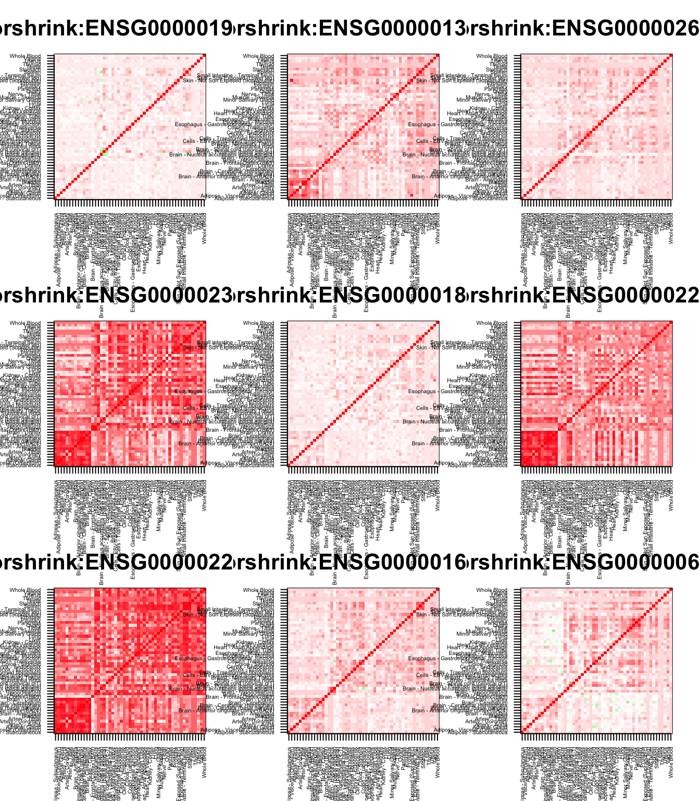
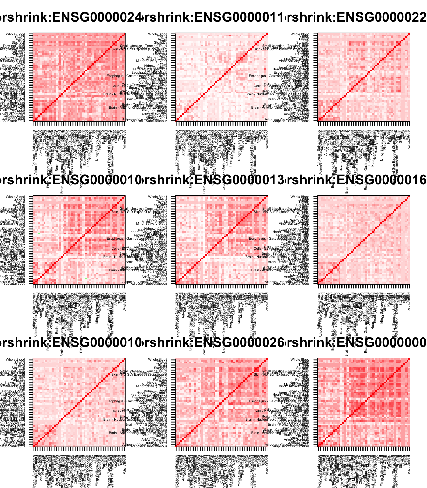

GSEA All tissues :: CorShrink vs CountClust
Kushal K Dey 5/12/2017 Last updated: 2017-05-25
Code version: 65df633
In this script, we try to perform some gene set enrichment analysis of the CountClust clusters with respect to the CorShrink patterns observed
ash_cor_result <- get(load("../output/ash_cor_only_voom_pearson_normal_gtex_tissues.rda"))
common_samples <- get(load("../output/common_samples.rda"))
tissue_labels <- read.table(file = "../data/GTEX_V6/samples_id.txt")[,3]
#library(data.table)
#data <- data.frame(fread("../data/GTEX_V6/cis_gene_expression.txt"))
#matdata <- t(data[,-c(1,2)])
gene_names <- as.character(read.table(file = "../data/GTEX_V6/gene_names_GTEX_V6.txt")[,1])
gene_names_1 <- as.character(sapply(gene_names, function(x) return(strsplit(x, "[.]")[[1]][1])))
U <- unique(tissue_labels)
Brain related
##################### Brain high ############################
tab <- array(0, dim(ash_cor_result)[3])
for(m in 1:dim(ash_cor_result)[3]){
temp <- ash_cor_result[order_index[1:13], order_index[(1:13)],m]
tab[m] <- median(temp[row(temp) > col(temp)])
}
tval <- (tab - mean(tab))/sd(tab)
names(tval) <- gene_names_1cluster_list <- vector(mode = "list", length = 20)
for(l in 1:20){
cluster_list[[l]] <- as.character(read.table(paste0("../utilities/gene_names_clus_", l, ".txt"))[,1])
}
related_genes <- c();
for(l in 1:length(cluster_list)){
related_genes <- c(related_genes, cluster_list[[l]]);
}
related_genes <- unique(related_genes)
other_genes <- setdiff(gene_names_1, related_genes)
cluster_list[[7]] <- sample(other_genes, 100, replace = FALSE)
library(fgsea)Loading required package: Rcppout <- fgsea(pathways = cluster_list,
stats = tval,
nperm = 10000)
out pval padj ES NES nMoreExtreme size
1: 0.0001519526 0.0007692308 0.4399268 1.8689597 0 100
2: 0.0002968240 0.0009894133 -0.4004356 -1.8896117 0 102
3: 0.0022792889 0.0050650864 0.3822009 1.6237203 14 100
4: 0.0002945508 0.0009894133 -0.4682077 -2.2078414 0 101
5: 0.0315697165 0.0526161941 -0.2914532 -1.3727114 107 100
6: 0.0050460077 0.0091745595 -0.3270825 -1.5434663 16 102
7: 0.2912931165 0.3426977842 0.2577324 1.0949353 1916 100
8: 0.1540790071 0.1925987589 0.2836514 1.2073989 1017 101
9: 0.0020461853 0.0050650864 -0.3572435 -1.6825760 6 100
10: 0.3592159246 0.3991288051 0.2471272 1.0498810 2363 100
11: 0.0792166033 0.1056221378 -0.2658578 -1.2521596 270 100
12: 0.0513092175 0.0732988821 0.3173883 1.3510044 338 101
13: 0.7936483817 0.7936483817 0.1957886 0.8317769 5222 100
14: 0.0020461853 0.0050650864 -0.3538446 -1.6665676 6 100
15: 0.0405713417 0.0624174488 0.3242753 1.3776326 266 100
16: 0.0001507613 0.0007692308 0.4428859 1.8891822 0 102
17: 0.0001507613 0.0007692308 0.7094339 3.0261742 0 102
18: 0.5257559641 0.5534273307 0.2271291 0.9649222 3459 100
19: 0.0001538462 0.0007692308 0.5031569 2.1020978 0 90
20: 0.0039507674 0.0079015347 0.3731960 1.5854643 25 100
leadingEdge
1: ENSG00000215513,ENSG00000099622,ENSG00000174652,ENSG00000113369,ENSG00000120738,ENSG00000112715,
2: ENSG00000171867,ENSG00000188191,ENSG00000132879,ENSG00000162545,ENSG00000124507,ENSG00000187189,
3: ENSG00000165507,ENSG00000167772,ENSG00000205362,ENSG00000147872,ENSG00000178878,ENSG00000100336,
4: ENSG00000163681,ENSG00000198624,ENSG00000112658,ENSG00000064999,ENSG00000113657,ENSG00000259716,
5: ENSG00000151468,ENSG00000164761,ENSG00000076706,ENSG00000110906,ENSG00000255905,ENSG00000064205,
6: ENSG00000125898,ENSG00000106123,ENSG00000179388,ENSG00000108352,ENSG00000178934,ENSG00000179859,
7: ENSG00000185022,ENSG00000182600,ENSG00000105321,ENSG00000182541,ENSG00000085514,ENSG00000064886,
8: ENSG00000149257,ENSG00000175592,ENSG00000173530,ENSG00000148926,ENSG00000083444,ENSG00000044574,
9: ENSG00000147533,ENSG00000164124,ENSG00000105290,ENSG00000179195,ENSG00000154945,ENSG00000068903,
10: ENSG00000144381,ENSG00000197142,ENSG00000090920,ENSG00000155850,ENSG00000172831,ENSG00000066230,
11: ENSG00000104419,ENSG00000158079,ENSG00000143344,ENSG00000181409,ENSG00000189058,ENSG00000134121,
12: ENSG00000077150,ENSG00000137959,ENSG00000240342,ENSG00000231389,ENSG00000137804,ENSG00000118503,
13: ENSG00000132141,ENSG00000134202,ENSG00000128944,ENSG00000204390,ENSG00000115138,ENSG00000184378,
14: ENSG00000148677,ENSG00000131143,ENSG00000106617,ENSG00000130528,ENSG00000156467,ENSG00000173660,
15: ENSG00000106211,ENSG00000143546,ENSG00000149573,ENSG00000134531,ENSG00000258232,ENSG00000167553,
16: ENSG00000101187,ENSG00000108342,ENSG00000068001,ENSG00000128016,ENSG00000134470,ENSG00000267607,
17: ENSG00000204525,ENSG00000018280,ENSG00000185201,ENSG00000163220,ENSG00000171051,ENSG00000163221,
18: ENSG00000156968,ENSG00000100219,ENSG00000112312,ENSG00000260065,ENSG00000218510,ENSG00000006652,
19: ENSG00000132002,ENSG00000135245,ENSG00000244734,ENSG00000187010,ENSG00000206172,ENSG00000011422,
20: ENSG00000105697,ENSG00000047457,ENSG00000197249,ENSG00000159403,ENSG00000182326,ENSG00000171236,It is dominated by the Clusters 17 and 19 which are blood related tissues in terms of positive effects. We need to carry out more focussed analysis.
High intra corr in Brain, low intra corr in others
##################### Brain high, others low ############################
tab <- array(0, dim(ash_cor_result)[3])
for(m in 1:dim(ash_cor_result)[3]){
temp <- ash_cor_result[order_index[1:13], order_index[(1:13)],m]
temp1 <- ash_cor_result[order_index[-(1:13)], order_index[-(1:13)],m]
tab[m] <- median(temp[row(temp) > col(temp)]) - median(temp1[row(temp1) > col(temp1)])
}
tval <- (tab - mean(tab))/sd(tab)
names(tval) <- gene_names_1cluster_list <- vector(mode = "list", length = 20)
for(l in 1:20){
cluster_list[[l]] <- as.character(read.table(paste0("../utilities/gene_names_clus_", l, ".txt"))[,1])
}
related_genes <- c();
for(l in 1:length(cluster_list)){
related_genes <- c(related_genes, cluster_list[[l]]);
}
related_genes <- unique(related_genes)
other_genes <- setdiff(gene_names_1, related_genes)
cluster_list[[7]] <- sample(other_genes, 100, replace = FALSE)
library(fgsea)
out <- fgsea(pathways = cluster_list,
stats = tval,
nperm = 10000)
out pval padj ES NES nMoreExtreme size
1: 0.6174428695 0.686047633 0.2108852 0.9200643 4268 100
2: 0.0369051473 0.067100268 -0.2749053 -1.3487680 113 102
3: 0.0001446341 0.000578620 0.4675199 2.0397275 0 100
4: 0.4747245625 0.632966083 -0.2024237 -0.9896946 1464 101
5: 0.0876482499 0.134843461 0.2943022 1.2840017 605 100
6: 0.5440474468 0.640055820 0.2186513 0.9566257 3760 102
7: 0.8695400636 0.869540064 0.1794679 0.7829948 6011 100
8: 0.0024580682 0.007023052 0.3755805 1.6407858 16 101
9: 0.0045336788 0.011334197 -0.3238087 -1.5791080 13 100
10: 0.0098351172 0.021855816 0.3528994 1.5396535 67 100
11: 0.1576511426 0.225215918 0.2755092 1.2020105 1089 100
12: 0.5432330827 0.640055820 0.2190444 0.9569319 3756 101
13: 0.0748056995 0.124676166 -0.2595515 -1.2657471 230 100
14: 0.7522668394 0.791859831 -0.1798908 -0.8772681 2322 100
15: 0.0001446341 0.000578620 0.5001941 2.1822810 0 100
16: 0.0001446550 0.000578620 0.5431301 2.3762600 0 102
17: 0.0001446550 0.000578620 0.6487370 2.8383031 0 102
18: 0.0117153601 0.023430720 0.3488751 1.5220959 80 100
19: 0.0020446911 0.006815637 0.3906544 1.6774851 13 90
20: 0.0001446341 0.000578620 0.4090685 1.7847121 0 100
leadingEdge
1: ENSG00000120738,ENSG00000176046,ENSG00000112715,ENSG00000177606,ENSG00000099622,ENSG00000113369,
2: ENSG00000008735,ENSG00000137267,ENSG00000127561,ENSG00000109472,ENSG00000058404,ENSG00000088899,
3: ENSG00000123689,ENSG00000146674,ENSG00000166819,ENSG00000165507,ENSG00000178878,ENSG00000187498,
4: ENSG00000140682,ENSG00000198624,ENSG00000113657,ENSG00000197256,ENSG00000058272,ENSG00000064999,
5: ENSG00000099860,ENSG00000171223,ENSG00000198959,ENSG00000161638,ENSG00000143878,ENSG00000072952,
6: ENSG00000114315,ENSG00000170345,ENSG00000142178,ENSG00000136826,ENSG00000176845,ENSG00000136235,
7: ENSG00000144741,ENSG00000123600,ENSG00000180198,ENSG00000006015,ENSG00000121864,ENSG00000167977,
8: ENSG00000175592,ENSG00000173530,ENSG00000134013,ENSG00000148926,ENSG00000168140,ENSG00000182718,
9: ENSG00000198121,ENSG00000157827,ENSG00000260465,ENSG00000251660,ENSG00000126878,ENSG00000173786,
10: ENSG00000197142,ENSG00000155850,ENSG00000090920,ENSG00000172831,ENSG00000149809,ENSG00000144381,
11: ENSG00000132470,ENSG00000177303,ENSG00000269926,ENSG00000168209,ENSG00000091409,ENSG00000117394,
12: ENSG00000137804,ENSG00000118503,ENSG00000077150,ENSG00000112118,ENSG00000072274,ENSG00000109320,
13: ENSG00000163467,ENSG00000148200,ENSG00000075702,ENSG00000140932,ENSG00000204536,ENSG00000115241,
14: ENSG00000145730,ENSG00000242349,ENSG00000078114,ENSG00000186073,ENSG00000106617,ENSG00000122367,
15: ENSG00000106211,ENSG00000149573,ENSG00000134531,ENSG00000171401,ENSG00000258232,ENSG00000143546,
16: ENSG00000128016,ENSG00000108342,ENSG00000128342,ENSG00000068001,ENSG00000134470,ENSG00000144802,
17: ENSG00000107738,ENSG00000141574,ENSG00000100504,ENSG00000125753,ENSG00000100985,ENSG00000122862,
18: ENSG00000112312,ENSG00000100219,ENSG00000156968,ENSG00000051108,ENSG00000171105,ENSG00000187840,
19: ENSG00000132002,ENSG00000011422,ENSG00000135245,ENSG00000187837,ENSG00000169429,ENSG00000240758,
20: ENSG00000105697,ENSG00000047457,ENSG00000182326,ENSG00000159403,ENSG00000197249,ENSG00000124253,unlist(lapply(out$leadingEdge, function(x) return(length(x)))) [1] 38 37 34 41 21 26 27 30 45 22 18 21 27 34 39 39 61 33 37 29
cluster 3
genes_clus <- cluster_list[[3]][1:9]
#genes_clus <- out$leadingEdge[[1]][1:9]
matched_indices <- match(genes_clus, gene_names_1)
par(mfrow = c(3,3))
for(m in 1:length(matched_indices)){
col=c(rev(rgb(seq(1,0,length=1000),1,seq(1,0,length=1000))),
rgb(1,seq(1,0,length=1000),seq(1,0,length=1000)))
image(as.matrix(ash_cor_result[order_index,order_index, matched_indices[m]]),
col=col, main=paste0("corshrink:", genes_clus[m]), cex.main=2,
xaxt = "n", yaxt = "n", zlim=c(-1,1))
axis(1, at = seq(0, 1, length.out = 53), labels = U, las=2, cex.axis = 0.5)
axis(2, at = seq(0, 1, length.out = 53), labels = U, las=2, cex.axis = 0.5)
}
cluster 9
genes_clus <- cluster_list[[9]][1:9]
#genes_clus <- out$leadingEdge[[1]][1:9]
matched_indices <- match(genes_clus, gene_names_1)
par(mfrow = c(3,3))
for(m in 1:length(matched_indices)){
col=c(rev(rgb(seq(1,0,length=1000),1,seq(1,0,length=1000))),
rgb(1,seq(1,0,length=1000),seq(1,0,length=1000)))
image(as.matrix(ash_cor_result[order_index,order_index, matched_indices[m]]),
col=col, main=paste0("corshrink:", genes_clus[m]), cex.main=2,
xaxt = "n", yaxt = "n", zlim=c(-1,1))
axis(1, at = seq(0, 1, length.out = 53), labels = U, las=2, cex.axis = 0.5)
axis(2, at = seq(0, 1, length.out = 53), labels = U, las=2, cex.axis = 0.5)
}
cluster 15
genes_clus <- cluster_list[[15]][1:9]
#genes_clus <- out$leadingEdge[[1]][1:9]
matched_indices <- match(genes_clus, gene_names_1)
par(mfrow = c(3,3))
for(m in 1:length(matched_indices)){
col=c(rev(rgb(seq(1,0,length=1000),1,seq(1,0,length=1000))),
rgb(1,seq(1,0,length=1000),seq(1,0,length=1000)))
image(as.matrix(ash_cor_result[order_index,order_index, matched_indices[m]]),
col=col, main=paste0("corshrink:", genes_clus[m]), cex.main=2,
xaxt = "n", yaxt = "n", zlim=c(-1,1))
axis(1, at = seq(0, 1, length.out = 53), labels = U, las=2, cex.axis = 0.5)
axis(2, at = seq(0, 1, length.out = 53), labels = U, las=2, cex.axis = 0.5)
}
cluster 16
genes_clus <- cluster_list[[16]][1:9]
#genes_clus <- out$leadingEdge[[1]][1:9]
matched_indices <- match(genes_clus, gene_names_1)
par(mfrow = c(3,3))
for(m in 1:length(matched_indices)){
col=c(rev(rgb(seq(1,0,length=1000),1,seq(1,0,length=1000))),
rgb(1,seq(1,0,length=1000),seq(1,0,length=1000)))
image(as.matrix(ash_cor_result[order_index,order_index, matched_indices[m]]),
col=col, main=paste0("corshrink:", genes_clus[m]), cex.main=2,
xaxt = "n", yaxt = "n", zlim=c(-1,1))
axis(1, at = seq(0, 1, length.out = 53), labels = U, las=2, cex.axis = 0.5)
axis(2, at = seq(0, 1, length.out = 53), labels = U, las=2, cex.axis = 0.5)
}
cluster 17
genes_clus <- cluster_list[[17]][1:9]
#genes_clus <- out$leadingEdge[[1]][1:9]
matched_indices <- match(genes_clus, gene_names_1)
par(mfrow = c(3,3))
for(m in 1:length(matched_indices)){
col=c(rev(rgb(seq(1,0,length=1000),1,seq(1,0,length=1000))),
rgb(1,seq(1,0,length=1000),seq(1,0,length=1000)))
image(as.matrix(ash_cor_result[order_index,order_index, matched_indices[m]]),
col=col, main=paste0("corshrink:", genes_clus[m]), cex.main=2,
xaxt = "n", yaxt = "n", zlim=c(-1,1))
axis(1, at = seq(0, 1, length.out = 53), labels = U, las=2, cex.axis = 0.5)
axis(2, at = seq(0, 1, length.out = 53), labels = U, las=2, cex.axis = 0.5)
}
Which tissues do these clusters corrsspond to?
clusters 15, 16 mainly correspond to Esophagus Mucosa and Lung. Cluster 3 corresponds to Breast and Adipose - the fatty issues. Cluster 9, which is one of the rare clusters with strong negative effect in gsea corresponds to the Brain-spinal cord genes, which we know have less correlation among the brain tissues.
High Brain vs other tissues
tab <- array(0, dim(ash_cor_result)[3])
for(m in 1:dim(ash_cor_result)[3]){
temp <- ash_cor_result[order_index[1:13], order_index[-(1:13)],m]
tab[m] <- median(temp[row(temp) > col(temp)])
}
tval <- (tab - mean(tab))/sd(tab)
names(tval) <- gene_names_1cluster_list <- vector(mode = "list", length = 20)
for(l in 1:20){
cluster_list[[l]] <- as.character(read.table(paste0("../utilities/gene_names_clus_", l, ".txt"))[,1])
}
related_genes <- c();
for(l in 1:length(cluster_list)){
related_genes <- c(related_genes, cluster_list[[l]]);
}
related_genes <- unique(related_genes)
other_genes <- setdiff(gene_names_1, related_genes)
cluster_list[[7]] <- sample(other_genes, 100, replace = FALSE)
library(fgsea)
out <- fgsea(pathways = cluster_list,
stats = tval,
nperm = 10000)
out pval padj ES NES nMoreExtreme size
1: 0.039053737 0.07810747 0.5782255 1.5785867 382 100
2: 0.016574586 0.04735596 -0.2088397 -1.7582752 2 102
3: 0.980218211 0.98715727 0.1220627 0.3332378 9612 100
4: 0.005235602 0.02209945 -0.5092449 -4.2558807 0 101
5: 0.005128205 0.02209945 -0.3949662 -3.2539502 0 100
6: 0.005524862 0.02209945 -0.2742055 -2.3086063 0 102
7: 0.916284287 0.98715727 0.1820419 0.4969843 8985 100
8: 0.987157272 0.98715727 0.1102071 0.3008418 9684 101
9: 0.020512821 0.05128205 -0.2081794 -1.7150972 3 100
10: 0.808606098 0.98657022 0.2468599 0.6739408 7929 100
11: 0.005128205 0.02209945 -0.2594446 -2.1374483 0 100
12: 0.293446132 0.48907689 0.4431670 1.2097514 2878 101
13: 0.121137963 0.22025084 0.5189866 1.4168613 1187 100
14: 0.010256410 0.03418803 -0.2365896 -1.9491566 1 100
15: 0.838584684 0.98657022 0.2305841 0.6295070 8223 100
16: 0.810100804 0.98657022 0.2461823 0.6725147 7955 102
17: 0.005498422 0.02209945 0.6431482 1.7569361 53 102
18: 0.581115530 0.89402389 0.3408390 0.9305089 5698 100
19: 0.025775313 0.05727847 0.6036060 1.6424652 250 90
20: 0.739267870 0.98657022 0.2780401 0.7590645 7249 100
leadingEdge
1: ENSG00000215513,ENSG00000174652,ENSG00000203875,ENSG00000099622,ENSG00000152117,ENSG00000180902,
2: ENSG00000117016,ENSG00000198794,ENSG00000106976,ENSG00000130758,ENSG00000105649,ENSG00000197457,
3: ENSG00000119185,ENSG00000167772,ENSG00000147872,ENSG00000165507,ENSG00000178878,ENSG00000182118,
4: ENSG00000213160,ENSG00000213160,ENSG00000166444,ENSG00000113657,ENSG00000259627,ENSG00000114861,
5: ENSG00000171223,ENSG00000148671,ENSG00000140545,ENSG00000038427,ENSG00000197380,ENSG00000166482,
6: ENSG00000244617,ENSG00000272084,ENSG00000154359,ENSG00000048707,ENSG00000176845,ENSG00000178184,
7: ENSG00000261186,ENSG00000145029,ENSG00000257303,ENSG00000112874,ENSG00000100023,ENSG00000225313,
8: ENSG00000148926,ENSG00000044574,ENSG00000173530,ENSG00000160691,ENSG00000083444,ENSG00000142552,
9: ENSG00000260465,ENSG00000164124,ENSG00000266844,ENSG00000137285,ENSG00000105290,ENSG00000049089,
10: ENSG00000066230,ENSG00000174236,ENSG00000231852,ENSG00000144381
11: ENSG00000104419,ENSG00000266964,ENSG00000164877,ENSG00000168758,ENSG00000007384,ENSG00000100767,
12: ENSG00000137959,ENSG00000240342,ENSG00000137965,ENSG00000111335,ENSG00000111331,ENSG00000157601,
13: ENSG00000125618,ENSG00000134202,ENSG00000132141,ENSG00000189269,ENSG00000111254,ENSG00000223839,
14: ENSG00000153531,ENSG00000154518,ENSG00000090266,ENSG00000182809,ENSG00000167792,ENSG00000112992,
15: ENSG00000143546,ENSG00000171195,ENSG00000111215,ENSG00000119541,ENSG00000228314
16: ENSG00000101187,ENSG00000204176,ENSG00000204176,ENSG00000165949,ENSG00000131400,ENSG00000134470,
17: ENSG00000204525,ENSG00000249437,ENSG00000163221,ENSG00000237683,ENSG00000185201,ENSG00000137462,
18: ENSG00000260065,ENSG00000218510,ENSG00000103226,ENSG00000237940,ENSG00000186275,ENSG00000006652,
19: ENSG00000187010,ENSG00000223609,ENSG00000249790,ENSG00000244734,ENSG00000206172,ENSG00000188536,
20: ENSG00000100197,ENSG00000118514,ENSG00000166741,ENSG00000047457,ENSG00000198848,ENSG00000167711,The ones with high positive effects are Clusters 17 and 19, which are both shared by blood. There are several clusters with high negative effects such as Cluster 14 (Heart), clusters 2 and 9 (Brain specific), Cluster 4 (Colon, Cervix etc), Cluster 5 (Artery) and Cluster 6 (Skin), which is a wide raneg of tissue specific genes. Blood seems to be the exception, which sort of makes sense, because blood may be contaminated with brain tissues.
cluster 17
genes_clus <- cluster_list[[17]][1:9]
#genes_clus <- out$leadingEdge[[1]][1:9]
matched_indices <- match(genes_clus, gene_names_1)
par(mfrow = c(3,3))
for(m in 1:length(matched_indices)){
col=c(rev(rgb(seq(1,0,length=1000),1,seq(1,0,length=1000))),
rgb(1,seq(1,0,length=1000),seq(1,0,length=1000)))
image(as.matrix(ash_cor_result[order_index,order_index, matched_indices[m]]),
col=col, main=paste0("corshrink:", genes_clus[m]), cex.main=2,
xaxt = "n", yaxt = "n", zlim=c(-1,1))
axis(1, at = seq(0, 1, length.out = 53), labels = U, las=2, cex.axis = 0.5)
axis(2, at = seq(0, 1, length.out = 53), labels = U, las=2, cex.axis = 0.5)
}
cluster 19
genes_clus <- cluster_list[[19]][1:9]
#genes_clus <- out$leadingEdge[[1]][1:9]
matched_indices <- match(genes_clus, gene_names_1)
par(mfrow = c(3,3))
for(m in 1:length(matched_indices)){
col=c(rev(rgb(seq(1,0,length=1000),1,seq(1,0,length=1000))),
rgb(1,seq(1,0,length=1000),seq(1,0,length=1000)))
image(as.matrix(ash_cor_result[order_index,order_index, matched_indices[m]]),
col=col, main=paste0("corshrink:", genes_clus[m]), cex.main=2,
xaxt = "n", yaxt = "n", zlim=c(-1,1))
axis(1, at = seq(0, 1, length.out = 53), labels = U, las=2, cex.axis = 0.5)
axis(2, at = seq(0, 1, length.out = 53), labels = U, las=2, cex.axis = 0.5)
}
cluster 4
genes_clus <- cluster_list[[4]][1:9]
#genes_clus <- out$leadingEdge[[1]][1:9]
matched_indices <- match(genes_clus, gene_names_1)
par(mfrow = c(3,3))
for(m in 1:length(matched_indices)){
col=c(rev(rgb(seq(1,0,length=1000),1,seq(1,0,length=1000))),
rgb(1,seq(1,0,length=1000),seq(1,0,length=1000)))
image(as.matrix(ash_cor_result[order_index,order_index, matched_indices[m]]),
col=col, main=paste0("corshrink:", genes_clus[m]), cex.main=2,
xaxt = "n", yaxt = "n", zlim=c(-1,1))
axis(1, at = seq(0, 1, length.out = 53), labels = U, las=2, cex.axis = 0.5)
axis(2, at = seq(0, 1, length.out = 53), labels = U, las=2, cex.axis = 0.5)
}
Heart related
tab <- array(0, dim(ash_cor_result)[3])
for(m in 1:dim(ash_cor_result)[3]){
tab[m] <- ash_cor_result[32, 33 ,m]
}
tval <- (tab - mean(tab))/sd(tab)
names(tval) <- gene_names_1cluster_list <- vector(mode = "list", length = 20)
for(l in 1:20){
cluster_list[[l]] <- as.character(read.table(paste0("../utilities/gene_names_clus_", l, ".txt"))[,1])
}
related_genes <- c();
for(l in 1:length(cluster_list)){
related_genes <- c(related_genes, cluster_list[[l]]);
}
related_genes <- unique(related_genes)
other_genes <- setdiff(gene_names_1, related_genes)
cluster_list[[7]] <- sample(other_genes, 100, replace = FALSE)
library(fgsea)
out <- fgsea(pathways = cluster_list,
stats = tval,
nperm = 10000)
out pval padj ES NES nMoreExtreme size
1: 0.0002173441 0.002173441 0.5616748 2.5628425 0 100
2: 0.2215673434 0.402849715 0.2468151 1.1289622 1014 102
3: 0.4044772875 0.543172106 0.2234380 1.0195158 1860 100
4: 0.1957242905 0.391448581 -0.2558466 -1.1458970 1061 101
5: 0.2979077949 0.496512991 -0.2417730 -1.0800759 1608 100
6: 0.1496033942 0.332451987 -0.2646434 -1.1875576 810 102
7: 0.4186046512 0.543172106 0.2218371 1.0122115 1925 100
8: 0.4888548951 0.543172106 0.2147063 0.9807532 2236 101
9: 0.7250597696 0.725059770 0.1938230 0.8843868 3335 100
10: 0.4488057767 0.543172106 -0.2240090 -1.0007183 2423 100
11: 0.0512931971 0.170977324 0.2900705 1.3235508 235 100
12: 0.1038024476 0.259506119 0.2711951 1.2387873 474 101
13: 0.3425342317 0.526975741 0.2303303 1.0509644 1575 100
14: 0.0001851509 0.002173441 -0.5414121 -2.4186577 0 100
15: 0.0331420107 0.132568043 -0.3100421 -1.3850552 178 100
16: 0.5998690242 0.631441078 0.2045687 0.9357220 2747 102
17: 0.4824274176 0.543172106 0.2153355 0.9849704 2209 102
18: 0.0970190705 0.259506119 -0.2800765 -1.2511896 523 100
19: 0.0040851430 0.027234287 0.3520721 1.5795385 18 90
20: 0.0281429365 0.132568043 -0.3143961 -1.4045061 151 100
leadingEdge
1: ENSG00000215513,ENSG00000203875,ENSG00000117616,ENSG00000013441,ENSG00000167766,ENSG00000004534,
2: ENSG00000167371,ENSG00000139899,ENSG00000129244,ENSG00000132535,ENSG00000072832,ENSG00000197457,
3: ENSG00000157150,ENSG00000119185,ENSG00000167772,ENSG00000164056,ENSG00000135678,ENSG00000165507,
4: ENSG00000163637,ENSG00000182253,ENSG00000156113,ENSG00000073712,ENSG00000139718,ENSG00000243244,
5: ENSG00000143127,ENSG00000176658,ENSG00000122176,ENSG00000140836,ENSG00000152601,ENSG00000006638,
6: ENSG00000268751,ENSG00000162738,ENSG00000188508,ENSG00000108379,ENSG00000108379,ENSG00000074410,
7: ENSG00000204622,ENSG00000175193,ENSG00000258469,ENSG00000215908,ENSG00000269893,ENSG00000064419,
8: ENSG00000149257,ENSG00000198431,ENSG00000128829,ENSG00000111799,ENSG00000163661,ENSG00000011028,
9: ENSG00000225972,ENSG00000255823,ENSG00000164124,ENSG00000172508,ENSG00000064393,ENSG00000060237,
10: ENSG00000161013,ENSG00000172831,ENSG00000142959,ENSG00000148795,ENSG00000197442,ENSG00000163694,
11: ENSG00000145675,ENSG00000101347,ENSG00000157368,ENSG00000090006,ENSG00000154263,ENSG00000126391,
12: ENSG00000077150,ENSG00000137959,ENSG00000157601,ENSG00000187608,ENSG00000111331,ENSG00000240342,
13: ENSG00000134202,ENSG00000132141,ENSG00000125618,ENSG00000128944,ENSG00000273142,ENSG00000204536,
14: ENSG00000014641,ENSG00000036448,ENSG00000110955,ENSG00000106631,ENSG00000135940,ENSG00000120053,
15: ENSG00000139289,ENSG00000169469,ENSG00000169474,ENSG00000164687,ENSG00000164924,ENSG00000140519,
16: ENSG00000176907,ENSG00000142748,ENSG00000101187,ENSG00000145506,ENSG00000154065,ENSG00000152527,
17: ENSG00000204525,ENSG00000105639,ENSG00000115590,ENSG00000163221,ENSG00000105835,ENSG00000204936,
18: ENSG00000175535,ENSG00000205213,ENSG00000164266,ENSG00000197358,ENSG00000167653,ENSG00000157017,
19: ENSG00000188536,ENSG00000244734,ENSG00000115523,ENSG00000206172,ENSG00000239839,ENSG00000239839,
20: ENSG00000171557,ENSG00000125730,ENSG00000083807,ENSG00000179761,ENSG00000105697,ENSG00000118137,
cluster 1
genes_clus <- cluster_list[[1]][1:9]
#genes_clus <- out$leadingEdge[[1]][1:9]
matched_indices <- match(genes_clus, gene_names_1)
par(mfrow = c(3,3))
for(m in 1:length(matched_indices)){
col=c(rev(rgb(seq(1,0,length=1000),1,seq(1,0,length=1000))),
rgb(1,seq(1,0,length=1000),seq(1,0,length=1000)))
image(as.matrix(ash_cor_result[order_index,order_index, matched_indices[m]]),
col=col, main=paste0("corshrink:", genes_clus[m]), cex.main=2,
xaxt = "n", yaxt = "n", zlim=c(-1,1))
axis(1, at = seq(0, 1, length.out = 53), labels = U, las=2, cex.axis = 0.5)
axis(2, at = seq(0, 1, length.out = 53), labels = U, las=2, cex.axis = 0.5)
}
cluster 14
genes_clus <- cluster_list[[2]][1:9]
#genes_clus <- out$leadingEdge[[1]][1:9]
matched_indices <- match(genes_clus, gene_names_1)
par(mfrow = c(3,3))
for(m in 1:length(matched_indices)){
col=c(rev(rgb(seq(1,0,length=1000),1,seq(1,0,length=1000))),
rgb(1,seq(1,0,length=1000),seq(1,0,length=1000)))
image(as.matrix(ash_cor_result[order_index,order_index, matched_indices[m]]),
col=col, main=paste0("corshrink:", genes_clus[m]), cex.main=2,
xaxt = "n", yaxt = "n", zlim=c(-1,1))
axis(1, at = seq(0, 1, length.out = 53), labels = U, las=2, cex.axis = 0.5)
axis(2, at = seq(0, 1, length.out = 53), labels = U, las=2, cex.axis = 0.5)
}
Skin related
tab <- array(0, dim(ash_cor_result)[3])
for(m in 1:dim(ash_cor_result)[3]){
tab[m] <- ash_cor_result[44, 45, m]
}
tval <- (tab - mean(tab))/sd(tab)
names(tval) <- gene_names_1cluster_list <- vector(mode = "list", length = 20)
for(l in 1:20){
cluster_list[[l]] <- as.character(read.table(paste0("../utilities/gene_names_clus_", l, ".txt"))[,1])
}
related_genes <- c();
for(l in 1:length(cluster_list)){
related_genes <- c(related_genes, cluster_list[[l]]);
}
related_genes <- unique(related_genes)
other_genes <- setdiff(gene_names_1, related_genes)
cluster_list[[7]] <- sample(other_genes, 100, replace = FALSE)
library(fgsea)
out <- fgsea(pathways = cluster_list,
stats = tval,
nperm = 10000)
out pval padj ES NES nMoreExtreme size
1: 0.9502477291 0.960149440 0.1734057 0.7451533 4602 100
2: 0.9601494396 0.960149440 0.1709196 0.7357380 4625 102
3: 0.0020644096 0.006881365 0.3783612 1.6258810 9 100
4: 0.0001933488 0.001037775 -0.6113406 -2.6129220 0 101
5: 0.0001938736 0.001037775 -0.4803471 -2.0482447 0 100
6: 0.1010802469 0.202160494 -0.2891265 -1.2380257 523 102
7: 0.2935590421 0.451629296 0.2512438 1.0796363 1421 100
8: 0.0008281573 0.003312629 0.3923721 1.6867659 3 101
9: 0.2338976053 0.425268373 0.2616110 1.1241859 1132 100
10: 0.4502477291 0.643211042 0.2327954 1.0003604 2180 100
11: 0.5117671346 0.682356179 0.2259853 0.9710963 2478 100
12: 0.0031055901 0.008873114 0.3719659 1.5990417 14 101
13: 0.7646374564 0.849597174 -0.2032960 -0.8668729 3943 100
14: 0.0001938736 0.001037775 -0.4844455 -2.0657205 0 100
15: 0.7594028693 0.849597174 -0.2039201 -0.8695343 3916 100
16: 0.0168119552 0.042029888 0.3323390 1.4305818 80 102
17: 0.0002075550 0.001037775 0.4682043 2.0154256 0 102
18: 0.6862097440 0.849597174 0.2096071 0.9007167 3323 100
19: 0.2865180246 0.451629296 0.2577015 1.0859492 1374 90
20: 0.0235342692 0.052298376 0.3261813 1.4016552 113 100
leadingEdge
1: ENSG00000203875,ENSG00000215513,ENSG00000092068,ENSG00000174652,ENSG00000113369,ENSG00000137077,
2: ENSG00000112139,ENSG00000160014,ENSG00000160014,ENSG00000020129,ENSG00000139899,ENSG00000227051,
3: ENSG00000135821,ENSG00000117289,ENSG00000196715,ENSG00000205362,ENSG00000148730,ENSG00000211445,
4: ENSG00000163017,ENSG00000010803,ENSG00000151240,ENSG00000092841,ENSG00000157110,ENSG00000163637,
5: ENSG00000122176,ENSG00000245067,ENSG00000163453,ENSG00000172348,ENSG00000169504,ENSG00000148671,
6: ENSG00000125898,ENSG00000244617,ENSG00000167695,ENSG00000196407,ENSG00000117036,ENSG00000069667,
7: ENSG00000262500,ENSG00000119686,ENSG00000151640,ENSG00000122674,ENSG00000122952,ENSG00000100461,
8: ENSG00000107984,ENSG00000091136,ENSG00000163661,ENSG00000272761,ENSG00000091986,ENSG00000138119,
9: ENSG00000225972,ENSG00000225630,ENSG00000237973,ENSG00000168309,ENSG00000137285,ENSG00000255823,
10: ENSG00000147804,ENSG00000114650,ENSG00000108679,ENSG00000104267,ENSG00000110917,ENSG00000176387,
11: ENSG00000119138,ENSG00000145675,ENSG00000107372,ENSG00000101347,ENSG00000070731,ENSG00000125124,
12: ENSG00000077150,ENSG00000023445,ENSG00000100297,ENSG00000240342,ENSG00000158457,ENSG00000146232,
13: ENSG00000168026,ENSG00000087460,ENSG00000219435,ENSG00000204390,ENSG00000259384,ENSG00000260001,
14: ENSG00000127472,ENSG00000163644,ENSG00000159251,ENSG00000175206,ENSG00000101608,ENSG00000189043,
15: ENSG00000135046,ENSG00000111215,ENSG00000162078,ENSG00000069020,ENSG00000169509,ENSG00000170477,
16: ENSG00000101187,ENSG00000145506,ENSG00000108691,ENSG00000073756,ENSG00000143570,ENSG00000090339,
17: ENSG00000204525,ENSG00000249437,ENSG00000134686,ENSG00000018280,ENSG00000141574,ENSG00000162747,
18: ENSG00000171105,ENSG00000187840,ENSG00000114115,ENSG00000176171,ENSG00000112312,ENSG00000197358,
19: ENSG00000187010,ENSG00000103148,ENSG00000206172,ENSG00000256269,ENSG00000133606,ENSG00000188536,
20: ENSG00000169738,ENSG00000167711,ENSG00000166741,ENSG00000104635,ENSG00000130649,ENSG00000138356,
This R Markdown site was created with workflowr